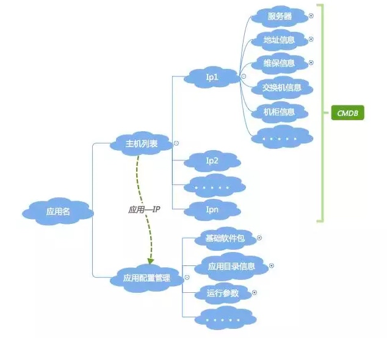

08 | 有了CMDB，为什么还需要应用配置管理
今天我们分享的主题是：有了 CMDB，为什么还需要应用配置管理？
你不妨先停下来，思考一下这个问题。
我抛出的观点是： CMDB 是面向资源的管理，应用配置是面向应用的管理。
请注意，这里是面向“资源”，不是面向“资产”，资源 ≠资产。
我们一起来梳理一下，在建设运维的基础管理平台时通常要做的事情。
以上信息梳理清楚，通过 ER 建模工具进行数据建模，再将以上的信息固化到 DB 中，一个资源层面的信息管理平台就基本成型了。
但是，信息固化不是目的，也没有价值，只有信息动态流转起来才有价值（跟货币一样）。接下来我们可以做的事情：
至此，从资源维度的信息梳理，以及基于这些信息的平台和流程规范建设就算是基本成型了。这个时候，以服务器简单示例，我们的视角是下面这样的： 

上面说明了 CMDB 的基础信息部分，如果从传统的 SA 运维模式，这些信息已经足够，但是从应用运维的角度，这些就远远不够了。
这时我们就需要一个非常非常重要的句柄：应用名，或者叫应用标识。至此，应用运维里面最最重要的一条联系也就产生了：“应用名 -IP“的关联关系（这里也可以是定义的其它唯一主机标识，如主机名、容器 ID 等等，因为我们使用的方式是 IP，所以这里就以 IP 示例）。
之所以说“应用名”和“应用名 -IP 关联关系”非常重要，是因为它的影响力不仅仅在运维内部，而是会一直延伸到整个技术架构上。后面我们会介绍到的所有平台和系统建设，都跟这两个概念有关。
CMDB 是 IP 为标识的资源管理维度，有了应用名之后，就是以应用为视角的管理维度了。首先看一下应用会涉及到的信息：
上面的梳理过程实际就是标准化的过程。我们梳理完上述信息后就会发现，这些信息跟 CMDB 里面的资源信息完全是两个维度的东西。所以从信息管理维度上讲，把资源配置和应用配置分开会更清晰，解耦之后也更容易管理。
好了，按照上面 CMDB 说的套路，梳理完成后，就是要进行信息的建模和数据的固化，这时就有了我们的“应用配置管理”。再往后，就是基于应用配置管理的流程规范和工具平台的建设，这就涉及到我们经常说的持续集成和发布、持续交付、监控、稳定性平台、成本管理等等。
从应用的视角，我们配置管理，应该是下面这样一个视图（简单示例，不是完整的）：
 好了，有了资源配置信息和应用配置信息，这两个信息应该怎么统一管理起来呢。直接看图：

至此，CMDB 和应用配置管理的分层分解就完成了，应用名关联着应用配置信息，IP 关联着资源信息，二者通过“应用名 -IP”的对应关系，联系到一起。
CMDB 是运维的基石，但是要发挥出更大的价值，只有基础是不够的，我们要把更多的精力放到上层的应用和价值服务上，所以我们说应用才是运维的核心。
你可以看到，如果仅仅基于 CMDB 的资源信息作自动化，最多只能做出自动化的硬件资源采集、自动化装机、网络 - 硬件拓扑关系生成等资源层面的工具，这些工具只会在运维层面产生价值，离业务还很远，就更谈不上给业务带来价值了。
但是基于应用这一层去做，就可以做很多事情，比如持续集成和发布、持续交付、弹性扩缩容、稳定性平台、成本控制等等，做这些事情带来的价值就会大大不同。
以上就是我抛出的观点，CMDB 是面向资源的管理，应用配置是面向应用的管理。